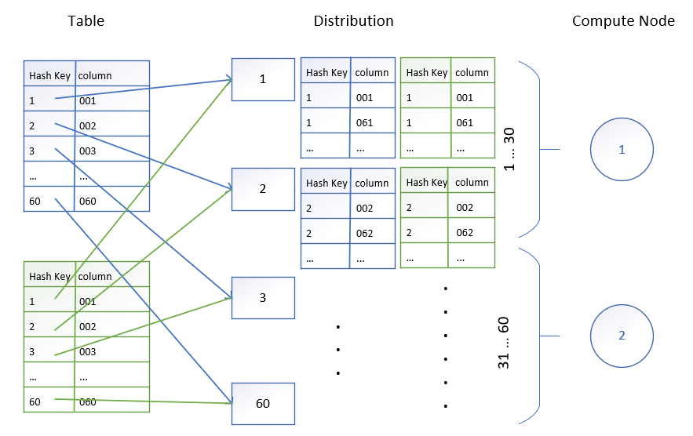
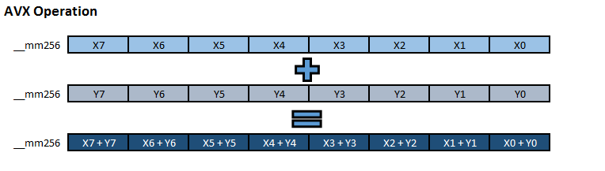

Azure SQL Data Warehouse Performance
My recent project uses Azure SQL Data Warehouse. The performance surprised me. I have the question is SQL Data Warehouse based on the technology of traditional SQL Server, and scale up? How do they scale? How is the performance improved?
Azure SQL Data Warehouse Architecture
I found some good articles explain the architecture of Azure SQL Data Warehouse, and the technology they used to improve the performance. Some of the topics are very interesting, I did more research on them.
- Adaptive caching powers Azure SQL Data Warehouse performance gains
- Lightning fast query performance with Azure SQL Data Warehouse
Storage and compute are decoupled
Storage and compute are decoupled. The compute node doesn’t manage the storage. Instead, the compute node is attached to the storage. It means we can scale up/down compute independently. There is no limitation on storage capacity. And we don’t pay for the storage. We only pay for compute. If we want to improve performance, we can allocated more compute nodes, and attach them to the storage. If we want to save money, we can reduce the compute nodes. One interesting thing is we can reduce to zero, we pay nothing, but we can’t access the data. It doesn’t mean we lost data, once we re-attach the compute nodes, we can access the data again. It’s called pause/resume the data warehouse.
Reference:
Distribution
There’s a magic number: 60. Azure SQL Data Warehouse always has 60 distributions. In other words, it divides the data into 60 pieces, the compute node process one or more pieces of the data. If we want to improve the performance, we pay for more compute nodes, and process data in parallel. For example, we have one compute node, the compute node need process all of the 60 distributions. If we have two compute nodes, each one process 30 distributions and they work in parallel. The performance is improved. However, it doesn’t mean adding more compute nodes always improve performance. Another important factor is how the data distributed. If distribution is unbalanced, some distribution has more, some has less, the compute time is the longest time of the compute node who process the most heavy distribution.
Azure SQL Data Warehouse has two distribution algorithms: hash and round-robin.
- Hash: using a deterministic hashing function to assign a row to 1 of the 60 distributions.
- Round-robin: distribute rows evenly across all distributions.
Hash distributed table:
CREATE TABLE [dbo].[FactOrder]
(
[OrderKey] int NOT NULL,
[ProductKey] int NOT NULL,
[Quantity] smallint NOT NULL
)
WITH
(
CLUSTERED COLUMNSTORE INDEX,
DISTRIBUTION = HASH([ProductKey])
)
Round-robin distributed table:
CREATE TABLE [dbo].[FactOrder]
(
[OrderKey] int NOT NULL,
[ProductKey] int NOT NULL,
[Quantity] smallint NOT NULL
)
WITH
(
CLUSTERED COLUMNSTORE INDEX,
DISTRIBUTION = ROUND_ROBIN
)
Round-robin maybe OK for simple scenario. But more often, we use Hash to optimize the distribution. And it’s the only way we can control the distribution. Choosing the correct hash column is critical for performance. Choosing hash column isn’t difficult. We can always get answer from our business scenario. For example, which column is used to join two tables, which column is frequently used in group by clause. The optimization goal is to minimize the data movement. In the two tables joining scenario, the hash column is the joining column, the rows of the two tables share the same joining key are distributed to the same compute node. Otherwise, data movement is required.

The hash distribution has limitations. One limitation is the data skew problem. When data is not distribute evenly, scale up computing can’t efficiently help the performance. Another limitation is we can only have one hash column, if the business scenario requires more columns, data movement is required.
Reference:
- Memory and concurrency limits for Azure SQL Data Warehouses
- Guidance for designing distributed tables in Azure SQL Data Warehouse
- CREATE TABLE (Azure SQL Data Warehouse)
Columnstore Index
Columnstore index is a new method to solve the problem how data is physically stored and how data is indexed.
A data table is logically organized with rows and columns. The tradition method physically stores data by row. The new method physically store data by column. The data table is divided by columns. Columns are separately stored. A column is a sequence of values. In addition, the sequence is divided into groups, and each group is compressed. A column’s physical representation is a sequence of compressed groups. Storing data by column instead of row is because the data warehouse scenario is analysis. The analysis is always column focused. For example, we want to calculate the total sales amount. The data warehouse just load the “sales amount” column from physical media, decompress the data, and calculate the sum. The process is compact, only the column we cared are loaded into memory, not the whole row. The compression can save the I/O cost. The compression is also efficient, since the values in a column are belong to the same business domain, so they’re similar, and similar values have high compress rate. The group size is fixed, it’s 1,048,576 (2^20). The group size is carefully decided, large enough to improve compression rates, and small enough to benefit from in-memory operations. Decompress can be optimized by CPU AVX technologies, like the video encoding/decoding technologies.
For a comparison, data is stored by row physically. Index is created on column. The index is implemented by B-tree. The tree node contains the key, the index of the row, and pointers to the child tree nodes. Time complexity of searching a row is O(log(n)). For the same scenario, “calculate the total sales amount”, load the index into memory, traversal the tree, and calculate the sum of all the keys. The process isn’t as efficient as columnstore index, when the data size is large.
Reference:
Hardware innovation
They also use hardware to improve the performance. I don’t quite understand, but just copy it for fun.
MVMe SSD
I/O bandwidth is critical. Azure SQL Data Warehouse Gen 2 takes advantage of MVMe SSD, which offer up to 2 2GB/s of local I/O bandwidth. Here’s the read/write speed comparisons between HDD, SATA SSD and MVMe SSD.
- 7200RPM SATA HDD read/write speed is around 100MB/s
- SATA SSD read/write speed is around 500MB/s
- MVMe SSD read speed is up to 3,500MB/s
AVX
Azure SQL Data Warehouse operates directly over compressed data, which take the advantage of the CPU technology: AVX.
Advanced Vector Extensions (AVX) uses 16 YMM registers to perform single instruction on multiple pieces of data (SIMD). The register is increased to 256 bits from 128 bits. New instructions are added.

Reference: